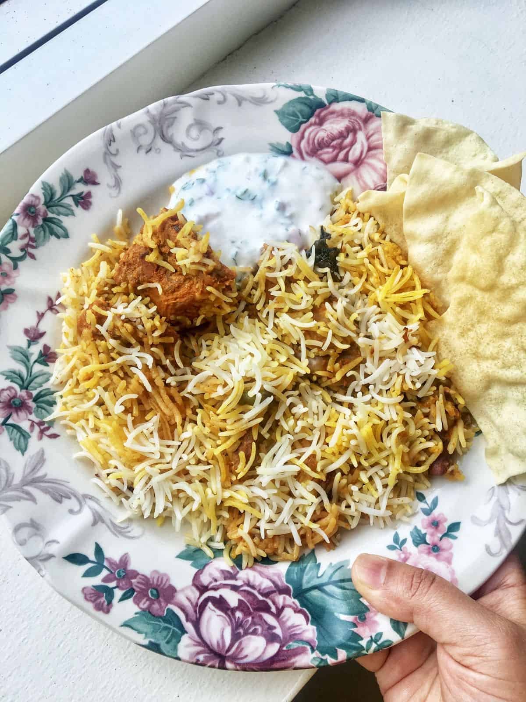

kacchi

kacchi
Ingredients
- crispy fried onions: indispensable!
- mutton or lamb: tender meat cut with or without bones
- caraway seeds (shah jeera): must-have but if you can't source shah jeera then use cumin but the
taste will be totally different
- mace (javitri): optional but recommended.
- green cardamom: must add
- black cardamom: optional but recommended
- cinnamon stick: must add
- cloves: must add
- star anise: optional but highly recommended
- small bay leaf: must add
- turmeric powder: adjust
- coriander powder: adjust
- red chilli powder: adjust
- ginger garlic paste: must add
- green chillies: adjust
- thick yoghurt: may use hung curd or Greek yoghurt
- fresh mint leaves: indispensable!
- fresh coriander leaves: optional
- oil (from the fried onion, preferably): may use ghee
- ghee: optional but recommended
- basmati rice: indispensable! but you may use other types of rice and adjust the par-boiling
time accordingly (I cannot help there though)
- a pinch of saffron strands: optional but recommended
How to make?
- Heat enough oil in a wide shallow pan or kadai.
- Separate the strands of the sliced onions with your hands.
- Test the oil by dropping one small onion strand, if it sizzles up then you can continue.
- Drop a handful of onion strands into the hot oil ensuring to spread out and do not overlap.